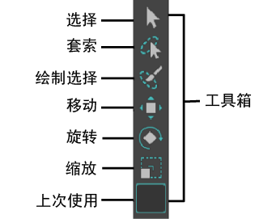

默认情况下，“工具箱”(Tool Box)将显示在 Maya 界面的左侧。请参见界面概述。它包含可供在 Maya 中进行操作的最常用工具。

Maya 界面左侧的“工具箱”(Tool Box)
注： 如果未看到“工具箱”(Toolbox)（或界面的其他区域），请转到主菜单中的(Windows > UI Elements)，然后选中缺少项旁边的复选框。您还可以重置工作区，或选择包含“工具箱”(Toolbox)的工作区，例如“常规”(General)。
工具快捷方式
以下热键适用于工具箱中的工具。您可以在热键编辑器中将快捷键重新指定给不同的键。